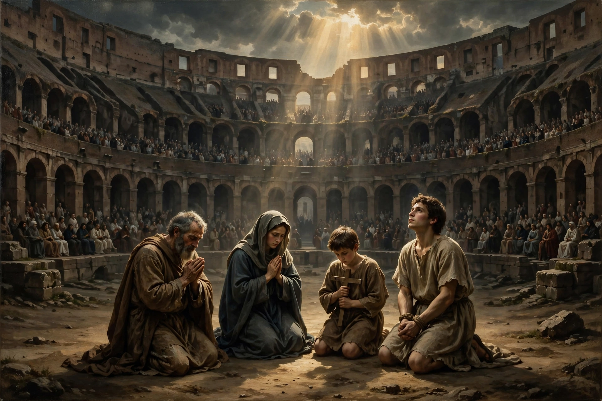

From Wikipedia, the free encyclopedia
| Persecution of Christians | |
|---|---|
| Period | 1st century AD – present |
| Early episodes | Nero (64 AD), Decius, Diocletian (303–311) |
| Forms | Execution, imprisonment, discrimination, forced conversion, church destruction |
| Modern hotspots | Parts of the Middle East, Africa, and Asia (per monitoring groups) |
The persecution of Christians — the systematic mistreatment of Christians on account of their faith — has occurred from the movement's beginnings in the Roman Empire through to the present day, at the hands of pagan, other religious, and secular authorities, and by non-state actors. Severity and form have varied widely, from local harassment and legal discrimination to imprisonment, forced conversion, and mass killing.
Early Christians faced sporadic, locally driven persecution: Nero scapegoated Rome's Christians after the Great Fire of 64 AD, and Pliny the Younger's correspondence with Trajan (c. 112) established that Christians were not to be hunted but could be punished if convicted. The first empire-wide persecutions came under Decius (250) and Valerian, culminating in the Great Persecution under Diocletian (303–311), which destroyed churches and scriptures and demanded universal sacrifice. The Edict of Milan (313) granted toleration, and Christianity became the state religion later that century.
In Sasanian Persia, Christians were persecuted especially after Christianity became Rome's religion and war broke out between the empires. In later centuries Christians at times faced restrictions as dhimmis in Muslim-ruled lands, with episodic violence, while Christian authorities themselves persecuted heretics, Jews, and pagans. In Japan, the Tokugawa shogunate banned Christianity in 1614 and executed converts, driving survivors underground (the Kakure Kirishitan).
The 20th century saw mass persecution under atheist communist regimes — in the Soviet Union, Maoist China, and North Korea — and the genocide of Armenian, Assyrian, and Greek Christians in the late Ottoman Empire. In the 21st century, monitoring organisations report severe persecution by Islamist groups such as the Islamic State in Iraq and Syria, Boko Haram in Nigeria, and restrictive blasphemy and anti-conversion laws in several countries; estimates by groups such as Open Doors hold that hundreds of millions of Christians face high levels of persecution or discrimination, though methodologies are debated.
Martyr · Diocletianic Persecution · Religious persecution · Freedom of religion
